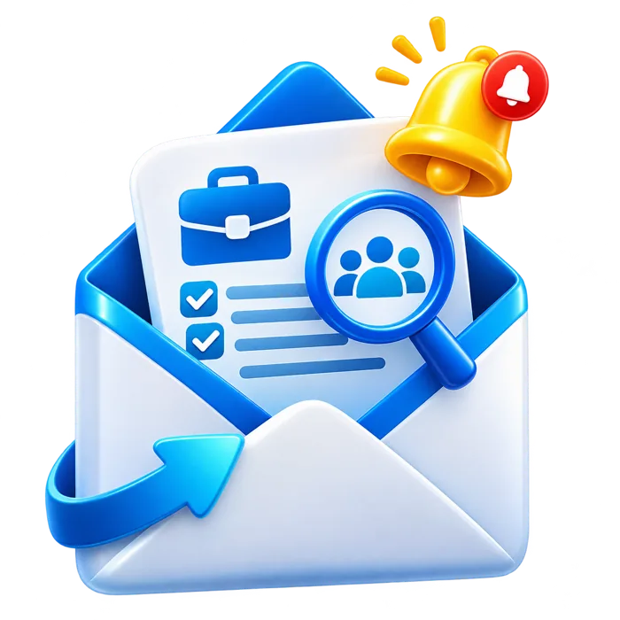

Empleo y desarrollo
profesional en QA
Encuentre oportunidades, analice vacantes y prepárese para destacar en el mercado laboral.
✓ Mejores oportunidades✓ Desarrollo profesional✓ Comunidad QA
Explora nuestras opciones
Accede a herramientas y recursos especializados para impulsar tu carrera en QA.
Buscar empleo
Explora vacantes, modalidades laborales y oportunidades en LinkedIn.
- Vacantes y filtros
- Modalidades laborales
- Oportunidades en tu región
Ir a sección →Analizar una vacante
Evalúa requisitos, competencias y ajusta tu perfil profesional.
- Análisis de ofertas
- Comparador de perfiles
- Consejos clave
Ir a sección →Competencias y pruebas
Fortalece tus habilidades con pruebas y evaluaciones.
- Habilidades blandas
- Estilos conductuales
- Evaluaciones de selección
Ir a sección →Entrevistas
Prepárate para entrevistas laborales, incluyendo en inglés.
- Preguntas frecuentes
- Simulaciones
- Consejos prácticos
Ir a sección →Otras oportunidades
Explora opciones en videojuegos y trabajo independiente.
- Gremios y comunidades
- Trabajo freelance
- Proyectos remotos
Ir a sección →
Mantente informado
Descubre las últimas oportunidades, recursos y novedades de QA Learning Hub.